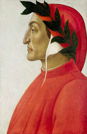
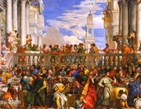

但丁
图片与文本的对齐方式：bottom
但丁
top
但丁
middle
图片的浮动
 十四至十六世纪欧洲的资产阶级文化运动。开始于意大利，并扩展到其他欧洲国家。随着资本主义生产关系在封建社会内部的萌芽，新兴资产阶级为反映自身的利益，求得发展，日益要求摆脱封建制度的束缚。文艺复兴就是这种斗争在思想文化领域的反映。许多知识分子以希腊罗马古典文化为武器，猛烈冲击封建意识形态，建立人文主义的世界观。表面上这种新文化仿佛是古典文化的复兴，因此历史上把这种文化运动称为文艺复兴运动，实质上也是一种创新，它为资产阶级服务，但是却把人民从封建神学的桎梏下解放出来，在当时起了巨大的推动作用。
十四至十六世纪欧洲的资产阶级文化运动。开始于意大利，并扩展到其他欧洲国家。随着资本主义生产关系在封建社会内部的萌芽，新兴资产阶级为反映自身的利益，求得发展，日益要求摆脱封建制度的束缚。文艺复兴就是这种斗争在思想文化领域的反映。许多知识分子以希腊罗马古典文化为武器，猛烈冲击封建意识形态，建立人文主义的世界观。表面上这种新文化仿佛是古典文化的复兴，因此历史上把这种文化运动称为文艺复兴运动，实质上也是一种创新，它为资产阶级服务，但是却把人民从封建神学的桎梏下解放出来，在当时起了巨大的推动作用。